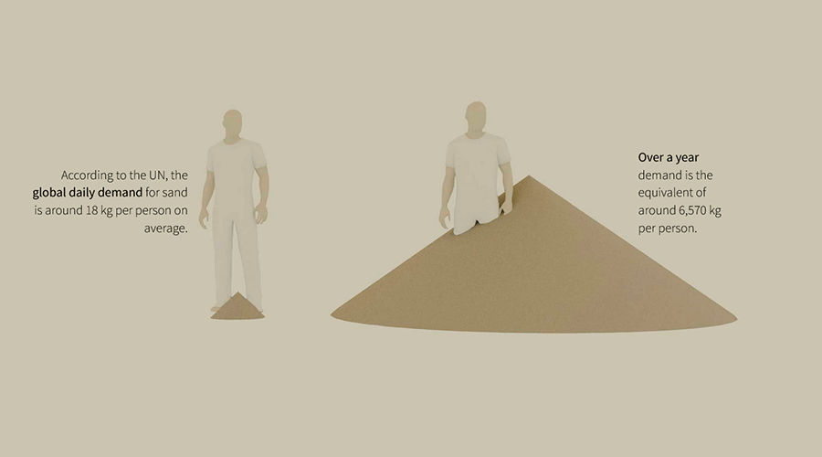
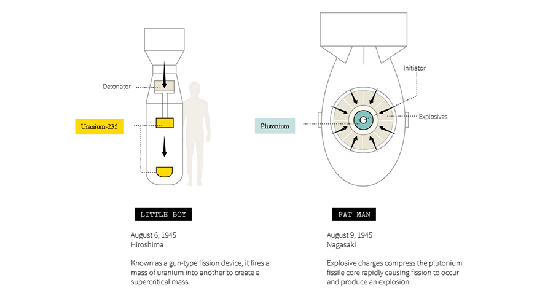
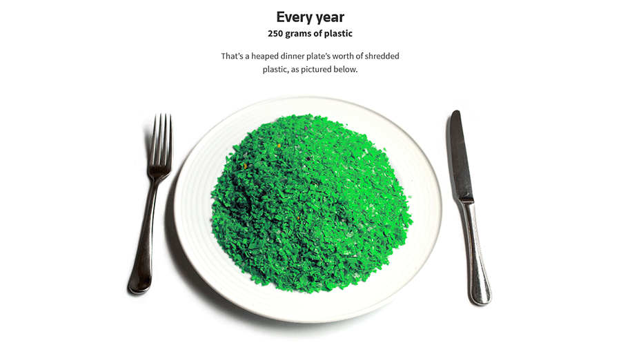
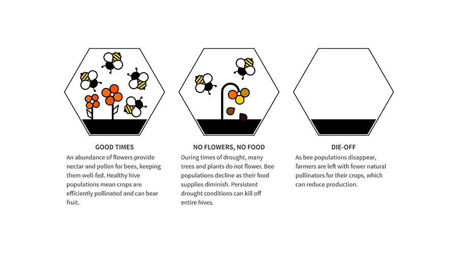
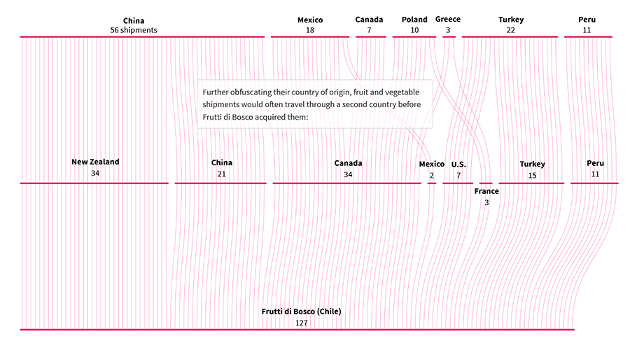
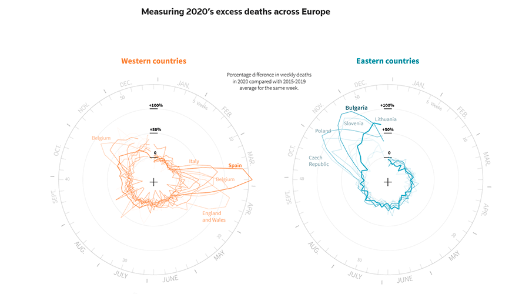
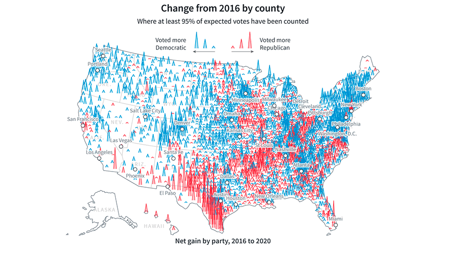
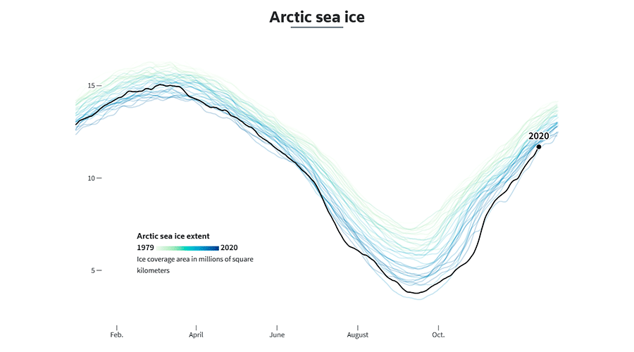

Ejemplos de gráficos figurativos recolectados de Reuter Graphics

The messy business of sand mining explained
Publicado en Reuters Graphics.

In a flash, a changed world
Publicado en Reuter Graphics.

A plateful of plastic
Publicado en Reuter Graphics.

Severe drought threatens honey bees in Chile
Publicado en Reuter Graphics.
Gráficos no figurativos rescatados de Reuters Graphics

Raspberry racket
Publicado en Reuters Graphics.

Europe’s COVID-19 divide
Publicado en Reuters Graphics.

How Joe Biden won the U.S. presidential election
Publicado en Reuters Graphics.

Wild weather, warming planet
Publicado enReuters Graphics.